Noda
Noda · Iwate
Noda
Highlighted on the Iwate map.
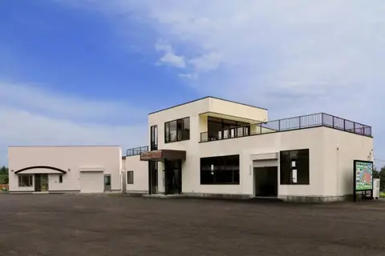
Stay
国民宿舎えぼし荘
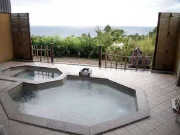
Kokuminshukusha Eboshi Sou
Guesthouse (minshuku) in Noda, Iwate.
Dining
ソフトハウス
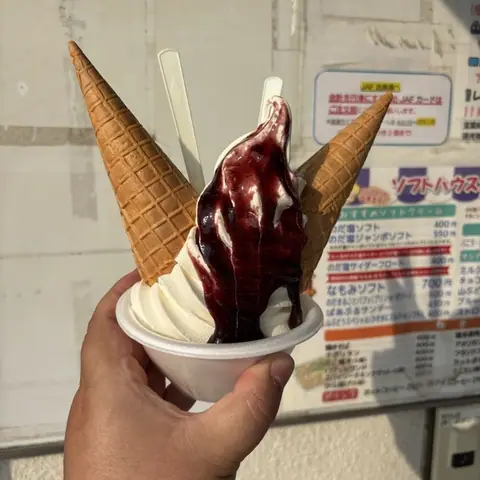
Sofutohausu
Gelato and ice-cream shop in Noda, Iwate.
お食事処 十府ヶ浦
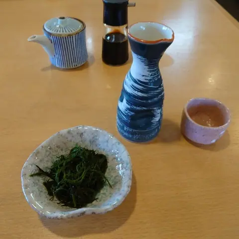
O Shokuji Tokoro Juu Fu Ke Ura
Shokudo diner in Noda, Iwate.
道の駅のだ ぱあぷる
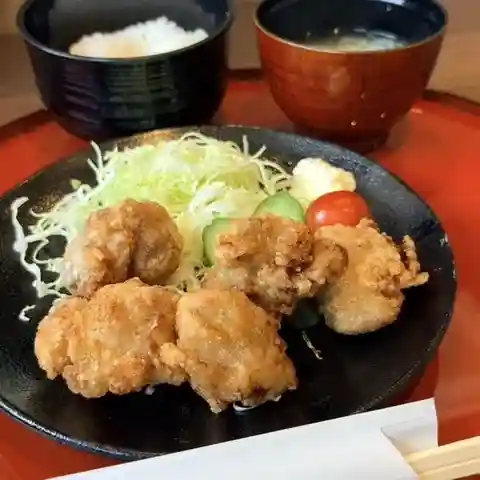
Michi No Eki Noda Paapuru
Ramen shop in Noda, Iwate.
洋食・旬彩料理 みなみ
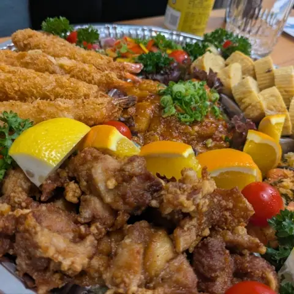
Youshoku Jun Sairyou Ri Minami
Yoshoku (Western-style) restaurant in Noda, Iwate.
のだ食堂よってっ亭
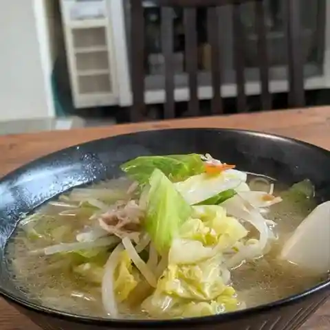
Noda Shokudou Yottetsu Tei
Izakaya in Noda, Iwate.
小野旅館
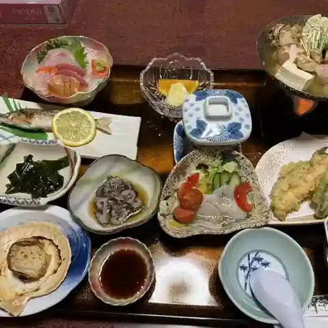
Ono Ryokan
Inn restaurant in Noda, Iwate.
まるきん 大沢菓子店
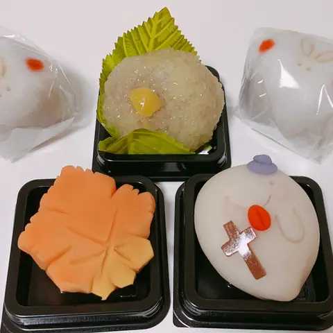
Marukin Oosawa Kashi Mise
Japanese sweets shop in Noda, Iwate.
たいようのいちこ
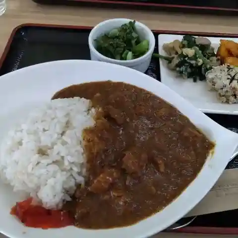
Taiyounoichiko
Café in Noda, Iwate.
産直 ぱあぷる
Sanchoku Paapuru
Local-cuisine restaurant in Noda, Iwate.
おすてりあ ばいげつ
Osuteria Baigetsu
Italian restaurant in Noda, Iwate.
ROKKA
Rokka
Café in Noda, Iwate.
苫屋
Tomaya
Café in Noda, Iwate.
つきや
Tsukiya
Shokudo diner in Noda, Iwate.
LAWSON 岩手野田店
Lawson Iwate Noda Mise
Convenience store in Noda, Iwate.
Sights
Noda Kiln
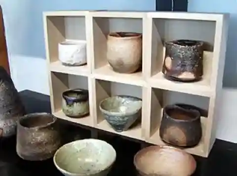
This workshop is run by Yukiya Izumida, a potter from Rikuzentakata City who has received high praise in numerous contests.
Natural Salt-Making Experience
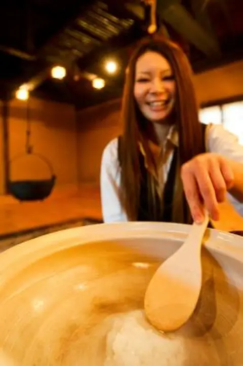
Noda salt, which has a long history, was made using a method called "direct boiling salt," in which seawater was boiled down directly.
Suzuumi no Oka Winery
This winery was established in 2016 to produce high-quality wine from wild grapes grown in Noda Village.
Banya Wood-Carved Fish Museum
It opened in May 2018 as the only "wooden fish aquarium" in the world.
Mt. Wasarabi
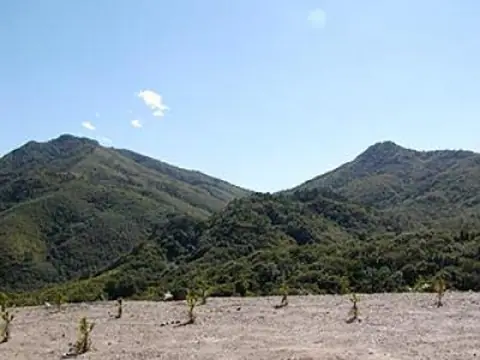
Mt. Wasarahi is a sacred mountain representing the village, with Mt.
Asian Ethnic Art Museum
It is located 6 kilometers west of the center of Noda Village in the Higatai district, which is dotted with old-fashioned magariya.The museum uses the remaining Nambu magariya in this area to exhibit folklore materials from various parts of Asia.
Daito no Kura Storehouse
It is a 50m high cliff of Paleogene tuff that juts out into Noda Port.
Eboshi Rock
An eboshi-shaped rock floating on the Tamagawa coast, located south of the Jufugaura coast.
Marine Rose
Rosestone, an ore created over a long period of 200 million years, is only produced in Noda Village in Japan.
Akka River
It is a primitive river and is famous nationwide as a mountain stream fishing river.